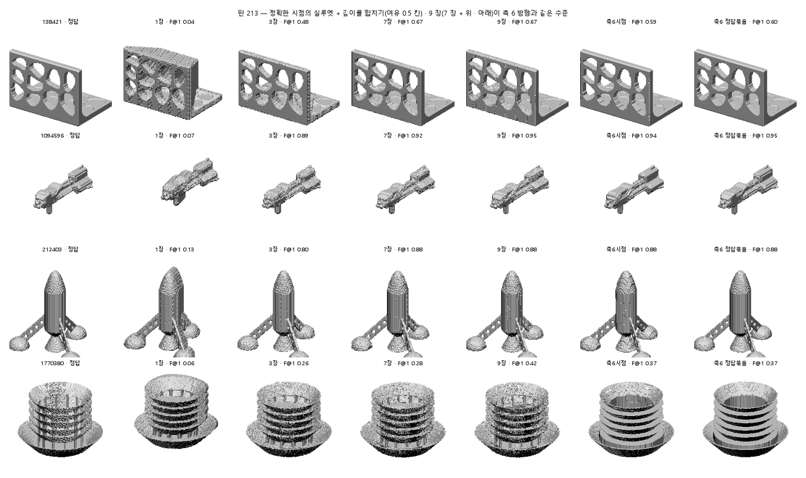

실험 m1_tr0213_h000_시점배치
7 장이 축 6 방향에 못 닿은 까닭이 위 · 아래 시점이 없어서인가?
판정 · 도구 통과 · 위 · 아래 통과(9 장 ≈ 축 6)
분석
한 줄로
물음: tr212 에서 7 장이 축 6 방향 정답 묶음에 못 닿은 까닭이 시점 배치(위 · 아래 시점이 없음)인가? 합치기 코드 자체는 천장을 깎지 않나?
답: 둘 다 그렇다. 합치기 코드는 tr212 에서 표면을 1.5 칸 부풀리고 있었다(제 실수) — 0.5 칸으로 고치니 축 시점 합치기가 정답 묶음과 0.01 차이(도구 통과). 고친 코드로 7 장 0.629 · 위 · 아래를 더한 9 장 0.691 로, 9 장이 축 6 방향 정답 묶음(0.689)과 같다(하드서페이스 F@1 % 중앙 · 통과).
왜 이 판을 했나
tr212(합치기 칸의 천장)에서 7 장 실루엣 + 깊이가 0.551 로 축 6 방향(0.689)의 80 % 였다. 가(생성 시점 합치기)의 천장을 정하려면 이 모자람이 시점 배치 탓인지 코드 탓인지 먼저 알아야 했다. 사용자 「둘 다 진행해」(시점 배치 · 가).
바꾼 것 하나
시점 세트(1 · 3 · 6 · 7 · 9 장 · 축 6 시점)만 바꿨다 — 입력 방위 30° 하나(tr212 에서 방위 넷 차이 0.002 안). 그리고 돌리기 전, 도구 대조를 모델 다섯으로 보다가 합치기 여유를 1.5 칸 → 0.5 칸으로 고쳤다(정답 묶음 깎기와 같은 반 칸 · 판정 대상 결과는 안 보고 정함).
결과

| 하드서페이스 132 · F@1 % 중앙(평균) | tr213(여유 0.5 칸) | tr212(1.5 칸 · 낮게 나옴) |
|---|---|---|
| 1 장 | 0.054(0.059) | 0.054 |
| 3 장 | 0.568(0.571) | 0.490 |
| 6 장(Zero123++ 6 방향만 = 가 의 천장) | 0.624(0.632) | — |
| 7 장 | 0.629(0.636) | 0.551 |
| 9 장(7 장 + 위 · 아래) | 0.691(0.670) | — |
| 축 6 시점(같은 합치기 코드 · 도구) | 0.670(0.668) | — |
| 축 6 방향 정답 묶음 | 0.689(0.683) | 0.689 |
| 통과선 | 값 | 판정 |
|---|---|---|
| 도구 |축 6 시점 − 축 6 정답 묶음| 중앙 ≤ 0.02 | 0.010 | 통과 |
| 위 · 아래: 9 장 ≥ 축 6 정답 묶음 − 0.05(0.639) | 0.691 | 통과 |
| 9 장 − 7 장(판정 아님) | +0.034 · p 3.8e-13 |
전체 263 모델도 같은 방향(1 장 0.055 · 3 장 0.612 · 6 장 0.708 · 7 장 0.714 · 9 장 0.730 · 축 6 정답 묶음 0.726).
왜 이렇게 나왔나
확인한 것
- tr212 의 낮은 숫자는 합치기 여유 1.5 칸 탓이 컸다: 같은 코드로 축 시점을 합치면 1.5 칸에서 정답 묶음보다 낮고(1094596 0.879 대 0.946) 0.5 칸이면 0.03 안이다 — 1.5 칸은 모든 표면을 크기의 1.3 % 까지 부풀려, 문턱 1 % 인 F@1 % 를 깎는다.
- 7 장(고도 20 · −10)은 위 · 아래에서 본 깊이가 없다 — 위 · 아래 두 장을 더하면 +0.034 로 축 6 방향 수준이 된다.
- 6 장(입력 없이 Zero123++ 배치만)도 0.624 로 7 장과 거의 같다 — 가 판(생성 6 장)의 천장은 이 줄이다.
짐작 (아직 확인 안 함)
- 가는 살 · 촘촘한 무늬 물체는 비스듬한 시점끼리 합치면 화소와 칸이 어긋나 표면이 오돌토돌해진다(그림 1770380) — 화소 해상도 · 여유를 시점 기울기에 맞추면 나아질 수 있다.
한계
- 정확한 시점 · 완벽한 실루엣 · 깊이(① · ② 완벽)를 둔 천장이다.
- 입력 방위 하나(30°) · 결정적 계산 · 한 번.
- tr212 의 판정(Q1 「7 장으로도 모자람」)은 고친 코드로도 7 장 0.629 < 0.639 라 그대로지만, 차이가 0.08 → 0.01 로 줄었다.
배운 것과 다음
합치기 칸은 고친 코드로 장마다 깊이가 있으면 9 장(위 · 아래 포함)에서 축 6 방향 정답 묶음과 같다 — 가 판(Zero123++ 6 장)의 천장은 0.624 다.
- 가(tr214): Zero123++ 6 장 → 장마다 실루엣 · 깊이(추정) → 합치기를 이 천장(6 장 0.624)과 비교.
- 위 · 아래 시점을 만드는 생성 모델(또는 생성 시점 배치)이 있으면 9 장 수준까지.
판 기록
- 통과선 커밋 2a8f65e(돌리기 전 · 여유 고침 같이) · 코드
원화3d/실험_20261013/캐드부품/합치기212.py(하나213 · 잼213) · 판정 원문잼.json· 모델별out/설명/캐드부품/모델213/잼_모델별.json(git 밖)